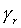
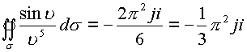
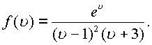
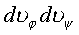
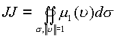
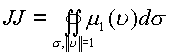

|
В. И. ЕЛИСЕЕВ ВВЕДЕНИЕ В МЕТОДЫ ТЕОРИИ
ФУНКЦИЙ ПРОСТРАНСТВЕННОГО КОМПЛЕКСНОГО ПЕРЕМЕННОГО |
|
1.6. Вычеты в пространстве. Вычисление интегралов с помощью вычетов.
В пространстве имеет место две формулы вычетов:криволинейный и поверхностный. Введем определение вычетов.
Пространственным криволинейным вычетом
функции в точке  называется коэффициент ряда Лорана для функции в
окрестности точки
называется коэффициент ряда Лорана для функции в
окрестности точки  , то есть
число, которое обозначается символом
, то есть
число, которое обозначается символом
(1.61.) |
Формула следует из формулы для определения
коэффициентов ряда Лорана. Под кривой понимаем кривую типа  , которая натянута на
сферу радиуса
, которая натянута на
сферу радиуса
(1.62.) |
Очевидно, что если точка
a точка регулярности функции, либо устранимая особая точка, то вычет равен нулю. Если в разложении функции в ряд Лорана отсутствует с первой отрицательной степенью n=-1, то вычет равен 0.Поверхностным вычетом функции  в точке
в точке
| , | (1.63.) |
где - поверхность, натянутая на кривую без точек самопересечения, радиус которой равен . Из формул для коэффициентов ряда
Лорана получим . Следовательно двойной интеграл равен
(1.64.) |
Вычисление вычета в полюсе простого или кратного определяется видом ряда Лорана для функции. Если имеем , откуда находим
, так что , а также , так что .
Если ряд Лорана имеет вид
то функция в
окрестности точки  имеет полюс
кратности n. Умножая это разложение на , дифференцируя n-1 раз и затем
переходя к пределу при получим
выражение
имеет полюс
кратности n. Умножая это разложение на , дифференцируя n-1 раз и затем
переходя к пределу при получим
выражение
(1.65.) |
По той же схеме получим
(1.66.) |
Пример. Определить вычет функции  в точке . Функция разлагается в ряд Лорана в
окрестности точки
в точке . Функция разлагается в ряд Лорана в
окрестности точки  в виде
в виде , где
, где
Следовательно . Откуда имеем
,.
Пример. Пусть . Разложение
функции в ряд Тейлора дает
представление функции  в виде
в виде
Откуда . Двойной интеграл

Пример. Пусть . Функция имеет полюс первого порядка в точке и полюс первого порядка в точке .Поэтому по формуле имеем
. . Данная функция в пространстве имеет еще две особые точки, которые соответствуют корням алгебраического уравнения стоящего в знаменателе. Последовательно получим .Откуда.
Пример. Рассмотрим функцию . Функция имеет особые точки полюс второго порядка, , полюс второго порядка. Используя формулу для расчета вычетов кратных полюсов будем последовательно иметь.

Функция имеет также два пространственных полюса второго порядка (см. пример )

.
По формуле вычислим пространственные вычеты
Пример. Пусть дана функция . Используя результаты предыдущего примера, вычислим пространственные вычеты.

Пример . Пусть дана функция Определить пространственные вычеты. Представим функцию в следующем виде Используя результаты предыдущего примера будем иметь
В пространстве функция представима также в виде
Откуда будем иметь
. Эти выкладки показывают, что пространственный корень является особой точкой первого порядка.
Вычет в бесконечно удаленной точке.
В соответствии с комплексной пространственной алгебре элемент изображается в сферических координатах в виде , так что бесконечная точка характеризуется бесконечным радиусом модулем Точка ноль определяется в пространстве как это неоднократно утверждалось в виде и произведением , где параметры действительные, а .
Если положить и
рассматривать функции  , тогда
функция будет аналитической в
некоторой окрестности точки ноль, которая будет
особой точкой того же типа, что и точка для функции
, тогда
функция будет аналитической в
некоторой окрестности точки ноль, которая будет
особой точкой того же типа, что и точка для функции 
Теорема. Пусть функция непрерывна
на границе области G поверхности  , натянутой без
точек самопересечения на пространственную
кривую типа
, натянутой без
точек самопересечения на пространственную
кривую типа  и
аналитична внутри этой области всюду, кроме
конечного числа особых точек ,
тогда имеем в пространстве Y следующие
соотношения
и
аналитична внутри этой области всюду, кроме
конечного числа особых точек ,
тогда имеем в пространстве Y следующие
соотношения
Если точка лежит внутри области G и если точка также принадлежит этой области, то
Если внутри области G имеется контур Г или
поверхность  содержащими
внутри себя особые точки
содержащими
внутри себя особые точки  , то
справедливы следующие интегральные соотношения
, то
справедливы следующие интегральные соотношения
Вычетом функции в бесконечной точке будет число , а также
, где
поверхность  натянута
на кривую достаточно большой
сферы , которая проходится в
обратном направлении. Поэтому вычеты равны
натянута
на кривую достаточно большой
сферы , которая проходится в
обратном направлении. Поэтому вычеты равны
, где есть коэффициенты перед соответственно в лорановском разложении функции в окрестности бесконечно удаленной точке.
Рис. 30. Связность области в комплексной плоскости.
Рис. 31. Связность области в комплексном пространстве.
В комплексной плоскости Z теорема о вычетах
соответствовала Рис. 30, где область G находится
между границей ,
где и Г, состоящей
из конечного числа ограниченных кусочно гладких
кривых , где
,
где и Г, состоящей
из конечного числа ограниченных кусочно гладких
кривых , где
В комплексном пространстве Y рассматривается сфера с поверхностью, натянутой на бесконечно большой радиус . Особые точки окружены сферами бесконечно малого радиуса . Так как через особую точку проходит изолированное направление, то на границе области фиксируются проколы поверхности бесконечно малого радиуса. (Рис. 31.)
Пример. Вычислить интеграл , где поверхность  натянута на сферу
натянута на сферу  .
В области
.
В области  функция имеет
четыре особые пространственные точки
функция имеет
четыре особые пространственные точки
. Вычеты во всех особых точках рассчитаны в примере , поэтому в соответствии с теоремой о вычетах имеем

Пример . Вычислить интеграл по поверхности натянутой на
. Пространственные вычеты согласно примера для данной функции равны . В соответствии с теоремой о вычетах будем иметь
В дальнейшем можно произвести выделение первой и второй комплексной части

Интегралы вида , где
поверхность  натянута
на сферу радиуса
натянута
на сферу радиуса  , так что
переменные
, так что
переменные  изменяются
соответственно в пределах .
Для сокращения записей введем обозначения . Так, что интеграл перейдет в
интеграл
изменяются
соответственно в пределах .
Для сокращения записей введем обозначения . Так, что интеграл перейдет в
интеграл
На поверхности сферы имеем и введенные переменные могут быть записаны через одну переменную в комплексном виде
, . Элемент площади выразится как произведение , откуда
получаем  и в силу
и в силу  будем иметь
будем иметь  .
Исходный интеграл сводится к вычислению
двойного интеграла по поверхности , где -есть
рациональная функция от .
Тогда по теореме о вычетах
.
Исходный интеграл сводится к вычислению
двойного интеграла по поверхности , где -есть
рациональная функция от .
Тогда по теореме о вычетах
 , где - все полюсы
рациональной функции ,
лежащие в сфере
, где - все полюсы
рациональной функции ,
лежащие в сфере  .
.
Пример . Вычислить интеграл
Преобразуем знаменатель. . Подставляя полученные выражения в исходный интеграл, будем иметь
Знаменатель имеет корни. Первый корень при является особой точкой подынтегральной функции –полюсом второго порядка.
Знаменатель имеет два пространственных корня . Пространственные корни при  имеют модуль и не являются особыми точками
подъинтегральной функцией. Если принять , то
имеют модуль и не являются особыми точками
подъинтегральной функцией. Если принять , то
где . При тех же условиях
.
Поэтому согласно теореме о вычетах имеем . Окончательно интеграл равен
Подынтегральную функцию преобразуем на сумму первых комплексных функций. Для этого обозначим и подставим в подынтегральную функцию
Следовательно первая комплексная часть равна , вторая комплексная часть равна
, В результате имеем расчет двух двойных интегралов
Мини оглавление:
[0], [1.1.1, 1.1.2, 1.1.3, 1.1.4, 1.1.5, 1.1.6, 1.1.7, 1.1.8, 1.2, 1.2.1, 1.2.2, 1.2.2.a, 1.2.2.b, 1.2.2.c, 1.2.2.d, 1.2.2.e, 1.2.2.f, 1.2.2.g, 1.2.2.h, 1.2.3, 1.3.1, 1.3.2, 1.3.3, 1.3.4, 1.3.5, 1.3.6, 1.4.1, 1.4.2, 1.5, 1.6, 1.7.1, 1.7.2, 1.7.3.1, 1.7.3.2, 1.7.3.3, 1.7.4.1, 1.7.4.2, 1.8.1], [2.1, 2.2],[3.1, 3.2, 3.3, 3.4.1, 3.4.2, 3.4.3, 3.4.4, 3.4.5],[4.1, 4.2, 4.3, 4.4],[5.1, 5.1.Рис.52, 5.2, 5.3, 5.4, 5.4.Т1, 5.4.Т2, 5.4.Т3, 5.5.1, 5.5.2, 5.5.3, 5.5.4],[6.1.1, 6.1.2, 6.2.1, 6.2.2, 6.2.3, 6.2.4, 6.2.5, 6.3, 6.4.1, 6.4.2, 6.5.1, 6.5.2],[7.1, 7.2, 7.3, 7.4, 7.5, 7.6, 7.7.1, 7.7.2, 7.8.1, 7.8.2, 7.8.3, 7.9],[8.1, 8.2.1, 8.2.2, 8.3, 8.4, 8.5, 8.6, 8.6.T1, 8.7, 8.8.1, 8.8.2, 8.8.3, 8.9.1, 8.9.2, 8.9.3, 8.10, 8.10.T2, 8.10.T3],[9.1, 9.2, 9.3, Рис.88, 89, 90, 91, 92, 93, 94, 95, 96, 97, 98, 99, 100],[10.1, 10.2, 10.3, 10.4, 10.5, 10.6, 10.7, 10.8, 10.9, 10.10, 10.11, 10.12, 10.13, 10.14, 10.15.1, 10.15.2, 10.16.1, 10.16.2, 10.17, 10.18],[11]
Размещенный материал является электронной версией книги: © В.И.Елисеев, "Введение в методы теории функций пространственного комплексного переменного", изданной Центром научно-технического творчества молодежи Алгоритм. - М.:, НИАТ. - 1990. Шифр Д7-90/83308. в каталоге Государственной публичной научно-технической библиотеки. Сайт действует с 10 августа 1998.
E-mail: mathsru@gmail.com